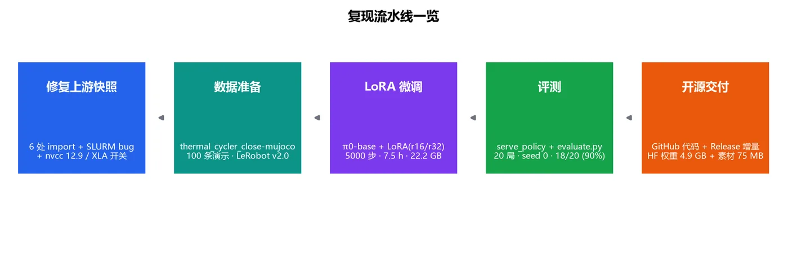
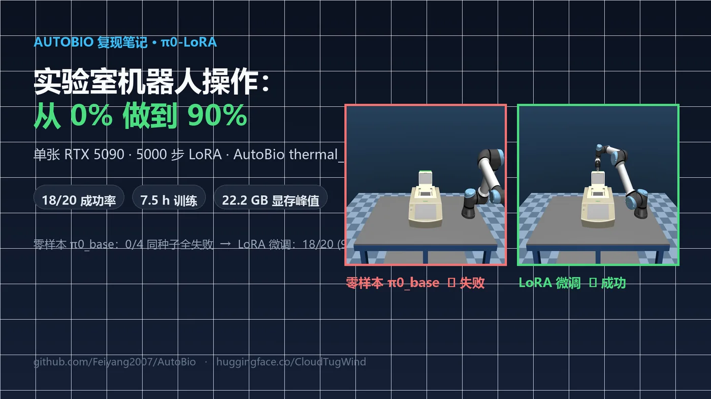

复现手记 · 001
AutoBio 复现笔记：单张 RTX 5090 + 5000 步 LoRA，成功率从 0% 做到 90%
修复上游冻结快照里 16 个月积累的失效代码，用 LoRA 替代全参数微调把 π0 训起来，再用同种子对照证明提升来自微调本身。含 11 条踩坑实录、成本对比与全部开源产物。
VLAπ0 / openpiLoRARTX 5090MuJoCoLeRobot
复现过、跑通、并且能给出数据和产物链接的东西，才写在这里。每篇都保留 口径边界——哪些结论成立、哪些不成立，比结论本身更重要。


修复上游冻结快照里 16 个月积累的失效代码，用 LoRA 替代全参数微调把 π0 训起来，再用同种子对照证明提升来自微调本身。含 11 条踩坑实录、成本对比与全部开源产物。
复现手记：跟随公开论文与官方仓库做的一次完整复现。写清环境、命令、失败过程与最终数字，并给出可下载的产物。这类文章的价值在于"另一个人能不能照着跑通"。
论文精读：读一篇具身智能／VLA 方向的论文，用自己的话把方法和它真正的新意讲明白，标注我不同意的地方。
学习笔记：把学到的东西做成能交互验证的说明——比如欠拟合与过拟合的滑动条演示，那类不适合长文的内容会放在项目区。